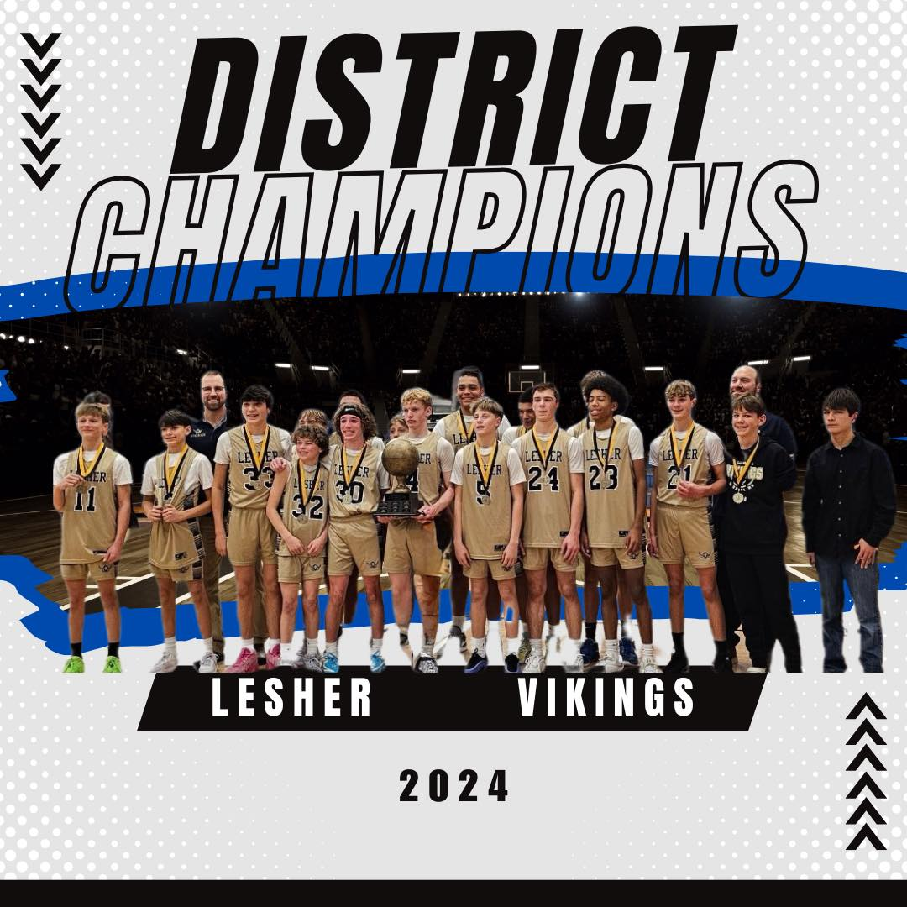

📅 Key 2025 Dates
- Parent Interest Meeting: 10/8/25 Time TBD
- Open Gym (optional): 10/13/25 – 10/17/25 Time TDB
- Tryouts: 10/21/25 – 10/23/25 Time TBD
- Season Duration: 10/21/25 – 12/17/25
🏆 Our Mission
Middle school is when beliefs about intelligence, talent, and ability often solidify into labels: “I’m good at sports” or “I’m just not good at math.” Middle School may be the most pivotal time to instill a growth mindset — the belief that effort, persistence, and learning drive improvement.
At Lesher Basketball, our mission is to meet this high-leverage moment with purpose. We celebrate effort, embrace mistakes as opportunities, and foster belonging. In doing so, we help our players develop a growth mindset that will serve them not only on the court, but throughout school, relationships, and life.
General Information
Basketball is available for 7th and 8th grade students and consists of 36 total players across four teams: varsity, junior varsity, C, and D. Students who do not make the final roster will receive a refund for the athletic fees after tryouts. Each player needs to provide gym shoes and workout clothes for practices. School uniforms are provided during competitions for use for the duration of the season. All participating athletes must be currently enrolled at Lesher and are required to complete the registration process and pay the participation fee prior to tryouts. Please notify coaches of any medical needs that are specific to your child prior to the start of the season (i.e. asthma, etc.).
Any student-athlete participating in open gym must have an updated physical form on file with the front office.
Out-of-School Basketball Opportunities
Fall '25 - Fort Collins Recreational League
The city of Fort Collins offers a recreational league open to players in 6th, 7th, and 8th grade. The season runs from mid October to mid-December with two practices and one game per week. You can signup to play on a team with other Lesher students.
The 7th and 8th grade league is open to players that do not make a school team. We suggest signing up for this league as a backup to the school team as your registration fee is refunded if you make the school team.
Winter '26 - Competitive Season
We are forming an affordable, equal playing time, local travel, competitive teams to give students the opportunity to play together more and grow their love of basketball. These teams will play ~12 games in a NoCo competitive league from mid-January to early March with 1-2 practices per week. Total cost is expected to be under $250 per-player, including uniforms. This is entirely volunteer-based with no paid coaches (parents are typically the coaches).
6th grade competitive team
We have two roster spots remaining - please email Derek Haynes at dhaynes@psdschools.org if you are interested.
7th and 8th grade competitive teams
Please email Derek Haynes at dhaynes@psdschools.org if you are interested in playing or coaching on a competitive team.
Winter '26 - Fort Collins Intermediate League
The intermediate league is a step above the city-run recreational league, but not as competitive as the competitive team. Players are randomly placed on teams although they can request a specific coach.
Summer '26 - Open Gyms
We will be hosting open gyms in the summer for players to come and practice their skills. More details to come.
2024 District Champions
Led by Coaches Eric Peitz and Ryan Van Roekel, the 2024 Lesher Boys Basketball team finished the regular season undefeated and went on to win the district championship.